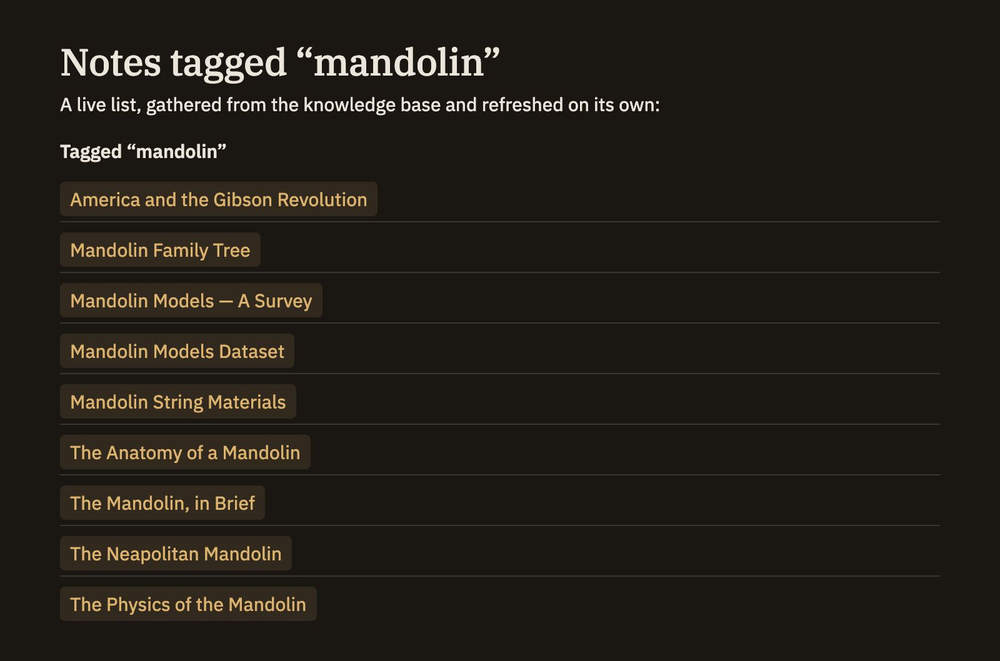

Query cells
A query cell puts a live answer from your knowledge base right inside a note — a list of matching notes, a table, or a chart — and keeps it current on its own. Unlike a runnable code cell that you press a button to compute, a query cell simply shows its results whenever you read the note, and refreshes by itself as your notes change. It only ever reads; it never alters your note.
Writing a query cell
Open a cell with a line that reads :::query-list and close it with a line that reads :::. In between, write your question about the knowledge base. Where the cell sits, Minerva shows the answer as a list of links you can click.
:::query-list
SELECT ?title ?path WHERE {
?path a minerva:Note ;
minerva:hasTag "open-question" ;
minerva:title ?title .
}
:::List, table, or chart
The word after :::query- chooses how the answer is shown. Pick whichever fits what you're asking.
:::query-list:::query-table:::query-timeseriesAdding options
To adjust how the results look, put a few settings at the top of the cell, one per line, then a line with three dashes — --- — to separate them from the question below.
:::query-table
title: Open questions
columns: title, path
limit: 20
---
SELECT ?title ?path WHERE {
?path a minerva:Note ;
minerva:hasTag "open-question" ;
minerva:title ?title .
}
:::A chart takes a couple more settings — x and y to pick which columns become the two axes, type for line, bar, or area, and height for how tall it is.

A cell for backlinks
One query cell needs no question at all. Write :::query-backlinks (then a closing :::) and it lists every note that links to the one you're in — a ready-made "mentioned in" section you can drop anywhere. Add a title for a heading, a limit to cap the count, or linkType to show only certain kinds of links, such as citations.
:::query-backlinks
title: Mentioned in
:::A query cell never changes your note or your knowledge base — it just shows what it finds. It refreshes on its own as your notes change, so an embedded list or table always reflects where things stand right now. To run a query once and keep its answer as fixed text, or to explore in a dedicated space, see Code & compute cells and the Query section.